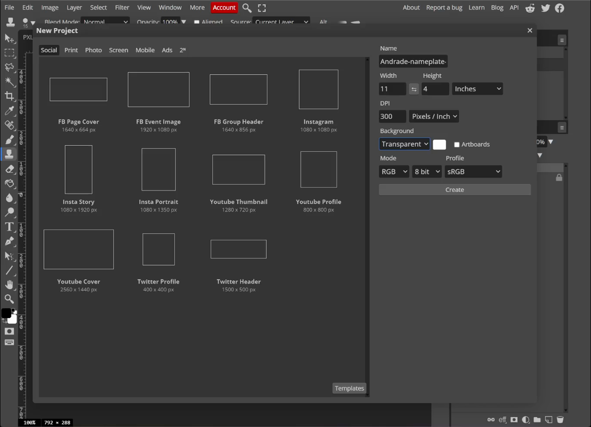
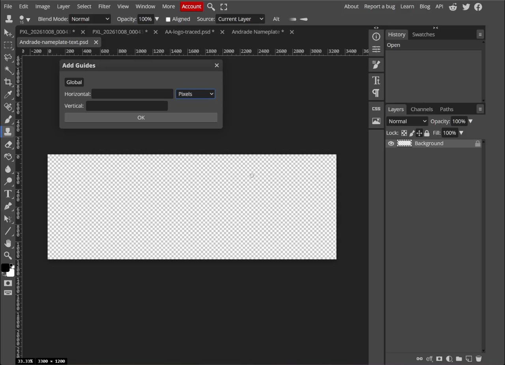
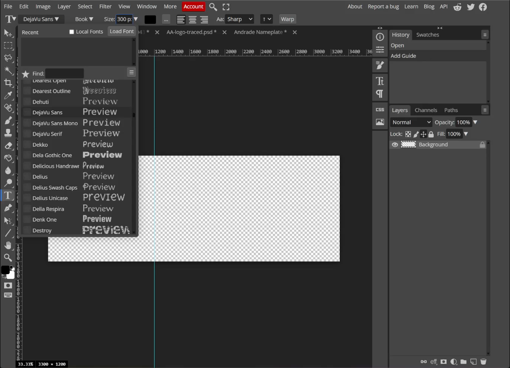
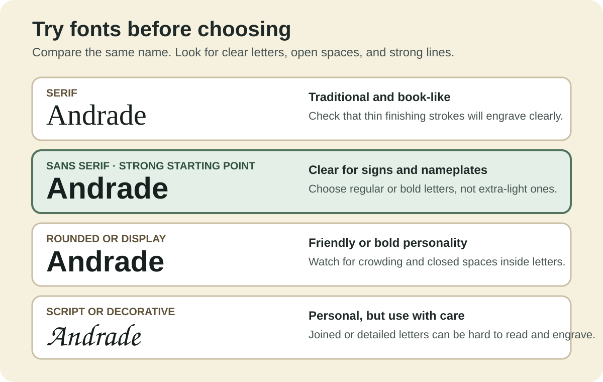
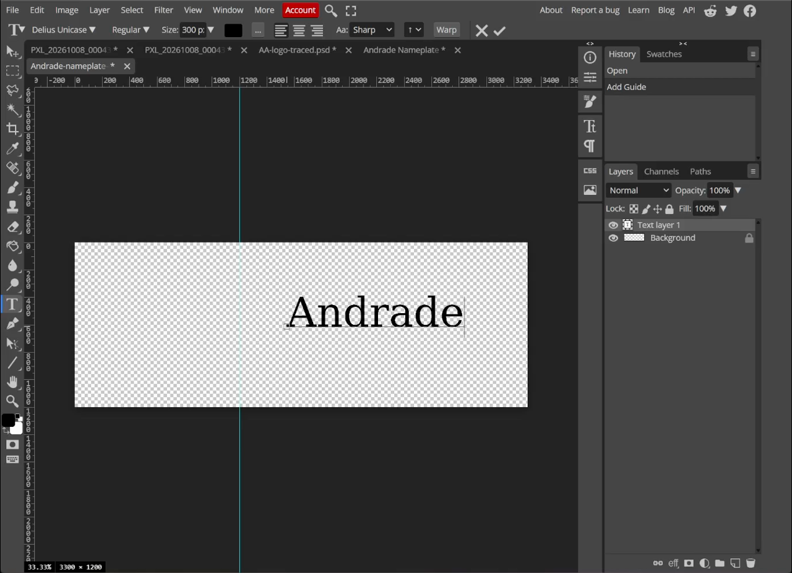
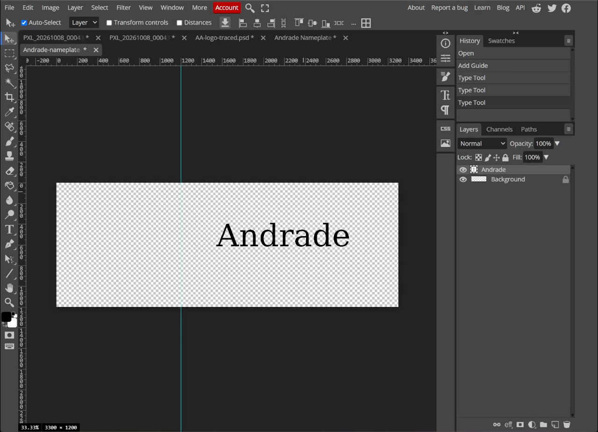
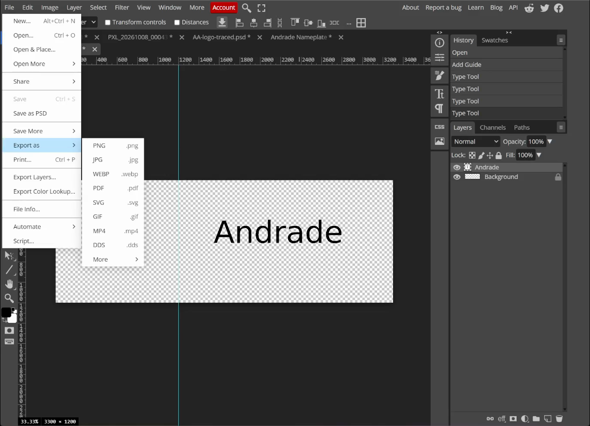

Lesson 1: Build the Nameplate Text in Photopea
Learning goals
By the end of this lesson:
- I can make an 11 × 4 inch canvas.
- I can leave a 4 × 4 inch space for a logo.
- I can try fonts and choose one that is easy to read.
- I can save a PSD and export a transparent PNG and SVG.
Why this is useful
A clear nameplate is easier to read and easier to change. The empty space on the left gives the logo a planned place instead of squeezing it in later.
You will use this file again in Lesson 3.
What you will make
You will make a transparent 11 × 4 inch nameplate. The left 4 × 4 inches stay empty. The name Andrade sits in the right part of the design.
Before you start
Open Photopea in a browser.
You will use:
- the Type Tool (T);
- a vertical guide;
- the Move Tool (V); and
- the Layers panel.
1. Make the canvas
- Choose File > New.
- Set Width to
11inches. - Set Height to
4inches. - Set DPI to
300. - Set Background to Transparent.
- Choose Create.
Photopea will make a 3300 × 1200 pixel canvas. That is correct for 11 × 4 inches at 300 pixels per inch.

2. Mark the logo space
The logo space is a 4 × 4 inch square on the left.
- Choose View > New Guide.
- Choose a Vertical guide.
- Enter
4 in. If Photopea asks for pixels, enter1200 px. - Choose OK.
Everything left of the guide is for the logo. Keep the name to the right of it.

3. Type the name
- Select the Type Tool (T).
- Click to the right of the guide.
- Type
Andrade. - Select the whole word before changing the font.

4. Try several fonts
Select the whole name. Try at least three fonts before choosing one. Change only the font at first. This makes the choices easier to compare.
Try:
- a serif font;
- a decorative or rounded font; and
- a plain sans serif font.
A serif font has small finishing strokes on the letters. Serif fonts are common in printed books. A sans serif font does not have those strokes. Sans serif fonts are often a clearer starting point for signs and nameplates.

No font is always good or bad. The best font fits the job and stays easy to read.
- Serif: try Georgia or Times New Roman for a printed-book look. Check the thin strokes.
- Sans serif: try DejaVu Sans, Arial, Verdana, or Open Sans for clear letters.
- Rounded or display: try Nunito, Montserrat, or Impact for personality. Check for crowding.
- Script or decorative: use joined or detailed letters with care. They can be hard to read and engrave.
Font names may vary. Choose a similar font if one is unavailable.

Ask these questions:
- Can I read the name quickly?
- Can I tell similar characters apart, such as
I,l, and1? - Are the lines thick enough to engrave?
- Do the spaces inside
a,e, andostay open?
Read the name from an arm’s length away. If you need extra time to recognize it, try a simpler font.
Zoom out until the whole nameplate fits on the screen. Compare the fonts again at the smaller view. The Accessible Design guide shows why this test matters.
The example ends with DejaVu Sans Book at about 300 px. Another clear sans serif font is also fine.
5. Place the name
- Select the Move Tool (V).
- Keep the name inside the right 7 inches.
- Centre it from top to bottom.
- Leave a clear margin on the right.
- Check that the name does not cross the 4 inch guide.
Use your eyes as well as the numbers. The empty space above and below the name should look even.

Accessible design
Accessible design helps more people see and understand your work. Before exporting, use the complete Accessible Design guide to check the font at different zoom levels, contrast, open letter shapes, colour choices, and alt text.
Check your work
Continue when:
- the canvas is 11 × 4 inches;
- the background is transparent;
- the left 4 × 4 inch area is empty;
- the name is easy to read;
- the letters have strong contrast and open shapes;
- the name is centred from top to bottom; and
- there is a good margin on the right.
6. Save and export
Save three files.
Every filename must begin with your student number, followed by your last name. Replace studentnumber and lastname below with your own information.
- Choose File > Save as PSD. Name it
studentnumber-lastname-nameplate.psd. - Choose File > Export as > PNG. Name it
studentnumber-lastname-nameplate.png. - Choose File > Export as > SVG. Name it
studentnumber-lastname-nameplate.svg.
Example: 123456789-Smith-nameplate.psd
Keep add raster graphics off when you export the SVG. The checkerboard means the background is transparent. It will not appear in the saved image.

If Photopea downloads a file with the wrong name, rename it before you submit it. Keep the file ending, such as .psd, .png, or .svg.
- Open the Launcher, then open Files.
- Open Downloads.
- Select the file.
- Press
Ctrl+Enter. - Type the required filename, then press
Enter.
- Open File Explorer with
Windows+E. - Open Downloads.
- Select the file, then press
F2. - Type the required filename, then press
Enter.
- Open Files.
- Open Downloads.
- Select the file, then press
F2. If that does not work, right-click the file and choose Rename. - Type the required filename, then press
Enter.
Do not remove or change the letters after the final dot. For example, an SVG filename must still end in .svg.
Official help: Chromebook Files, Windows File Explorer, and Ubuntu Files.
Download the example files


Common issues
- The canvas has a white box: make a new file with Background: Transparent.
- The name is in the logo space: move it to the right of the 4 inch guide.
- The name looks too small: make the type larger, but keep a clear right margin.
- The name is hard to read: choose a simple sans serif font with open letter shapes.
- The name moved when the font changed: use the Move Tool to centre it again.
Design curriculum: Complete this lesson after the N.I.C.E. Design Process. Next, practise the tracing tools in Lesson 2A. You will combine the finished files in Lesson 3.
Summary
You made an 11 × 4 inch transparent nameplate. You left a 4 × 4 inch space for a logo, tried several fonts, chose a balanced sans serif font, and saved PSD, PNG, and SVG files.